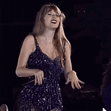

Imagenes flotantes
Taylor Swift es la compositora de las letras que nunca necesitaron de grandes contribuciones o ediciones para entregar su mensaje. Como una revisión de su vida, las canciones crecieron junto a ella, desde el momento en que se estrenó en el mundo del country, hasta convertirse en la cara más relevante de la última década del pop. Taylor y su música significaron el escapismo para muchos adolescentes, jóvenes y adultos, los mismos que hoy la validan por su autenticidad.
Las eras de Taylor Swift se refieren a cada una de sus etapas musicales, divididas de acuerdo al lanzamiento de cada uno de sus discos. Cada disco corresponde a una era. La estadounidense ha lanzado 10 álbumes de estudio desde que comenzó su carrera en 2006, hasta 2022. El anuncio de los conciertos de Taylor Swift en México marcó un hito importante para los fanáticos de la cantante en el país, ya que representó su primera visita oficial como parte de una gira mundial. A través de su aclamado "The Eras Tour", Swift confirmó en 2023 una serie de presentaciones en el Foro Sol de la Ciudad de México, causando una gran expectativa entre sus seguidores. Este anuncio fue recibido con entusiasmo, ya que el país había esperado durante años por la oportunidad de verla en vivo. La llegada de Taylor Swift a México no solo generó gran demanda por boletos, sino que también destacó el impacto cultural y comercial que tiene la artista en el mercado latinoamericano
Ha sido común que la cantante estadounidense realice una gira por su país y muy escasos sitios en el extranjero con el lanzamiento de cada uno de sus álbumes de estudio. Sin embargo, con la imposibilidad de salir de gira con Lover, Folklore y Evermore, debido a la pandemia de Covid-19, la compositora lanzó un tour internacional en donde recopila canciones de todos sus álbumes, titulado The Eras Tour. The Eras Tour comenzó el 17 de marzo de 2023 en Glendale, Arizona y termina el 23 de noviembre de 2024 en Toronto, Canadá. Con esta gira mundial, Taylor Swift visita más de 50 ciudades en 146 espectáculos en Norteamérica, América Latina, Europa, Asia y Oceanía; incluidas cuatro fechas en Ciudad de México y tres en Buenos Aires. La gira está proyectada a romper el récord de la gira femenina más exitosa en la historia a nivel internacional, superando a Madonna y ha roto récords de preventas con la mayor cantidad de boletos vendidos por un artista en un solo día. Particularmente, en México, con The Eras Tour, Taylor Swift es el primer acto femenino en la historia en realizar cuatro fechas agotadas en una misma gira.
Imagen de fondo
Ir al THE ERAS TOUR ha sido una de las experiencias más inolvidables y bonitas en mi vida. Désde el comienzo, todo se sintió como una montaña rusa de emcoiones. Los primeros días estaba muy segura que no alcanzaría entradas, ya que eras miles de personas que querían lo mosmo que yo. Sin embargo, todo estuvo a mi favor y pude conseguir entradas junto con una de mis amigas. Sin duda, el 24 de agosto del 2023 quedará marcado de por vida.
Imagen de vinculo
Una de las canciones que me sorprendió mucho escuchar en vivo fue "Anti-hero". No tengo palabras para describir todo lo que sentí, estaba inundada de nostalgía y las lagrimas no dudaron en salir. La letra es demasiado profunda y muy personal, sin duda, la recomendaría 1000 veces.
Imagen de gift
La relación entre la música y la memoria es poderosa. Evoca emociones intensas que luego traen recuerdos. Cuando se escucha una canción de hace años, se suele sentir que se viaja de vuelta a ese momento y reaparecen imágenes y sentimientos. La relación entre la música y la memoria es poderosa. Evoca emociones intensas que luego traen recuerdos. Cuando se escucha una canción de hace años, se suele sentir que se viaja de vuelta a ese momento y reaparecen imágenes y sentimientos.
Taylor Swift(Imágenes con filtro)
Una de mis fotos favoritas del The eras tour.